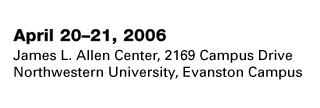

| ||||||||||||||||||
| ||||||||||||||||||
8:30-9:15 a.m.
Continental Breakfast and Registration
9:15-9:30 a.m.
Welcome
9:30 a.m.-noon
From Discovery to Medical Practice: Challenges and Implications
Timothy G. Buchman, Washington University School of Medicine in St. Louis
Jeffrey Horbar, Vermont Oxford Network
Vimla Patel, Columbia University
noon-1 p.m.
Student Awards
1-2 p.m.
Lunch
2-4:30 p.m.
Self-Organization, Self-Assembly, and Control of Complex Systems
Richard M. Murray, California Institute of Technology
Melanie Mitchell, Portland State University
Mitra Hartmann, Northwestern University
4:30-5:30 p.m.
Student Presentations
8:30-9:00 a.m.
Continental Breakfast
9-11:30 a.m.
Speech and Music Systems: Dynamics, Variations, and Emerging Technology
Mari Ostendorf, University of Washington
Edward Large, Florida Atlantic University
Zsuzsanna Fagyal, University of Illinois
11:30 a.m.
Closing Remarks
| ||||||||||||||||||
| ||||||||||||||||||

Conference Home |
Schedule |
Speakers |
Student Awards |
Registration |
Location |
Visiting Campus |
Contact Northwestern Institute on Complex Systems (NICO) Last updated 02/13/2006 World Wide Web Disclaimer and University Policy Statements © 2006 Northwestern University |
 |  |